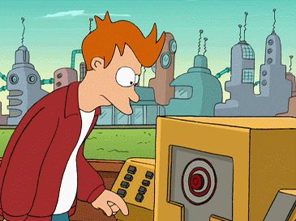

3 Why Continuous Delivery
3.1 Low risk releases

3.2 Faster time to market

3.3 Higher quality
- discover regressions within minutes
- teams are freed to focus on higher level exploratory testing, usability testing, performance and security testing
- ensuring quality is built in to products and services from the beginning
3.4 Better products

3.5 Happier teams

5 Essentials3
5.1 Maintain a single-source repository

5.2 Make your build self-testing
repeatable, scalable, and maintainable

5.3 Automate the build

5.4 Fix broken builds immediately

5.5 Keep the build fast

5.6 Test in a clone of the production environment

5.7 Make it easy for anyone to get the latest executable

5.8 Automate deployment
6 Pipeline

6.1 Pipeline as Code
pipeline:
backend:
image: golang
commands:
- go get
- go build
- go test
frontend:
image: node:6
commands:
- npm install
- npm test
publish:
image: plugins/docker
repo: octocat/hello-world
tags: [ 1, 1.1, latest ]
registry: index.docker.io
notify:
image: plugins/slack
channel: developers
username: drone
7 QA in Production4

- Gathering production data
- Critical success indicators
- Logging
- Metrics
- APIs
- Learning from production data
- Alerting
- Dashboards
8 Popular CI tools

/
Continuous Delivery - Jichao Ouyang